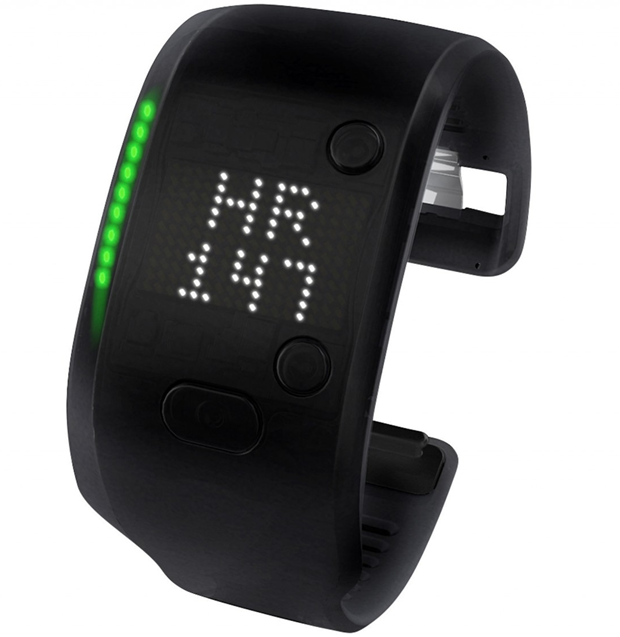

Specifications of LG W100 Smartwatch (Black)
Technical Details
GENERAL
Brand LG
Dial Shape Square
Strap Color Black
Model Number W100
Sensor 9 Axis Gyro Sensor, Accelerometer, Compass
Water Resistant Yes
Model Name W100
DISPLAY FEATURES
Display Size 1.65 inch
Display Type IPS LCD
Display Resolution 250 x 280 pixel
DIMENSIONS
Weight 63 g
Other Dimensions Dimensions: 37.9 x 46.5 mm
Price: Rs. 1,590.00